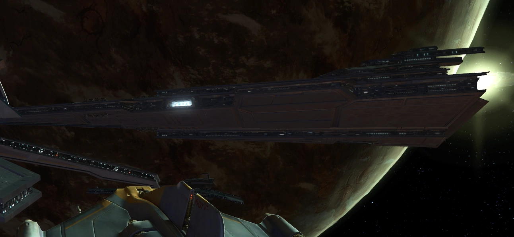
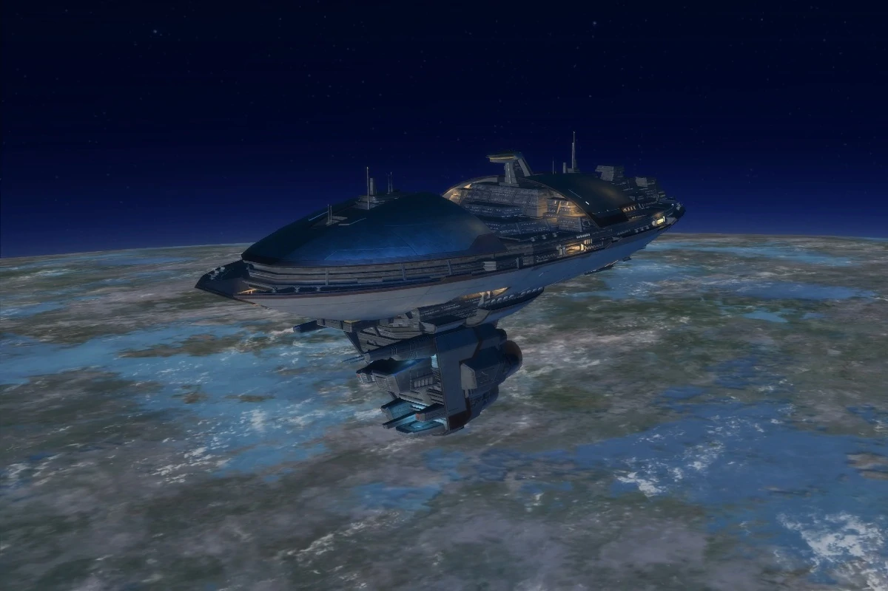
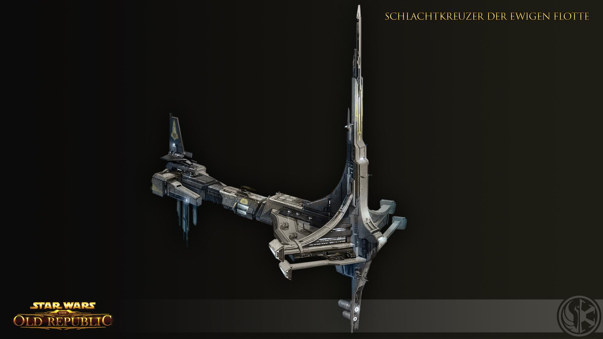
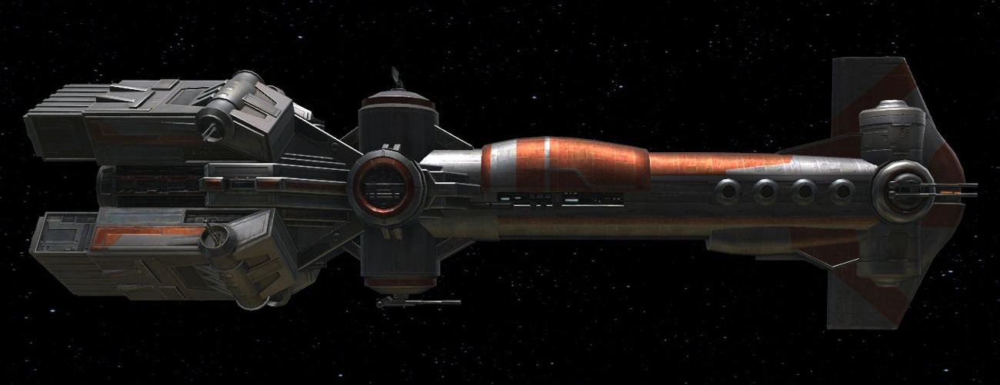

Die Black Talon
Die Black Talon ist ein imperialer Flashpoint in The Old Republic. Hauptschauplätze sind die Black Talon und die Brentaal Star. Ziel ist die Gefangennahme des „Generals“, einem Überläufer zur Republik, der wertvolle imperiale Militärgeheimnisse besitzt.

Entermannschaft
Die Entermannschaft ist ein imperialer Flashpoint aus der Missionsreihe "Mobilmachung". Ziel ist es im ersten Schritt ein Schiff der Republik zu entern um zum Zweiten zur zweiten Mission "Die Fabrik" zu gelangen.

Mandalorianische Räuber
Je nach der gespielten Fraktion, benachrichtigen entweder Darth Malgus bzw. Meisterin Satele Shan einen imperialen/republikanischen Einsatztrupp, dass der abtrünnige mandalorianische Varad-Clan einen modernen republikanischen Schlachtkreuzer, die "Allusis" gestohlen hat. Dem Einsatztrupp wird befohlen, dieses Schiff (zurück-)zuerobern und für die jeweilige Fraktion zu sichern.
Schiffe der Ewigen Flotte
Die Ewige Flotte war eine Armada unbekannter Herkunft, die ausschließlich durch Droiden und künstliche Intelligenzen operiert und vom Ewigen Thron gesteuert wurde. Jahrhunderte bevor Valkorion sich zum Herrscher über das Ewige Imperium aufschwang, vernichtete die Ewige Flotte beinahe alles Leben im Wilden Raum, bis die Gravestone sie deaktivierte und nach der letzten Schlacht verschwand. Nachdem Valkorion die Kontrolle über Zakuul erlangt und sein neues Reich aufgebaut hatte, benutzte er die Visionen der Erben von Zakuul um die Ewige Flotte zu finden. Da die von Droiden gelenkte Flotte nach wie vor deaktiviert war, schuf er den Ewigen Thron, um zukünftig die Ewige Flotte steuern zu können.
Raumschiffe in der Galaxis
Letztes Update 09.07.2021
Die Esseles
Die Esseles ist ein republikanischer Flashpoint in The Old Republic. Schauplatz ist das luxoriöses Passagierschiff "Esseles". Ziel ist eine Twi'lek-Botschafterin vor der Gefangennahme durch das Imperium zu bewahren.
Die Red Reaper
Auf dem Schiff "Red Reaper" entdeckt man Darth Ikoral und seine Scherken die er in Jahrtausenden unter reinblütigen Sith außerhalb des Imperiums zusammensuchte. Da er nun beiden Fraktionen zur Gefahr wird werdet ihr gebeten ihn zu vernichten.

Die Graue Sekante
Die Graue Sekante ist ein extrem großes Raumschiff der Spezies der Gree. Der Zweck des Raumschiffes war lange Zeit unbekannt. Es liegt in der Nähe des Westlichen Schelfeises bei der Ilum-Gree-Enklave zur Zeit des Zweiten Galaktischen Krieges.

Spirit of Vengeance II
Nach dem Ende des Zakuul-Konflikts forderten viele Mandalorianer von ihrer Mand’alor Shae Vizla der Rächerin, dass sie eine neue Spirit of Vengeance bauen ließ, die mindestens so groß und zerstörerisch war wie das Original. Vizla zögerte zunächst, gab dann aber doch nach. Ihre Berater erklärten ihr darüber hinaus die Bedeutung von greifbarer Geschichte für die Truppen.